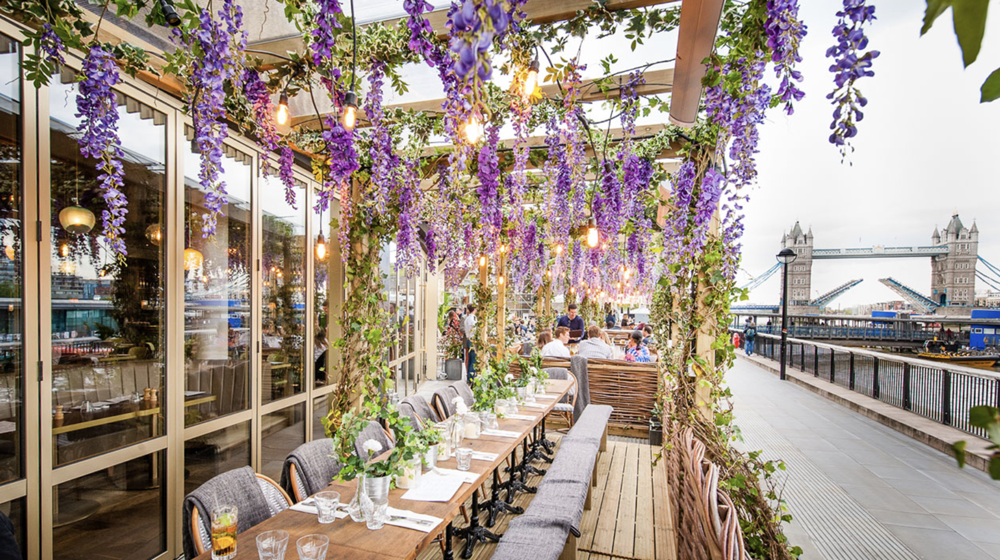
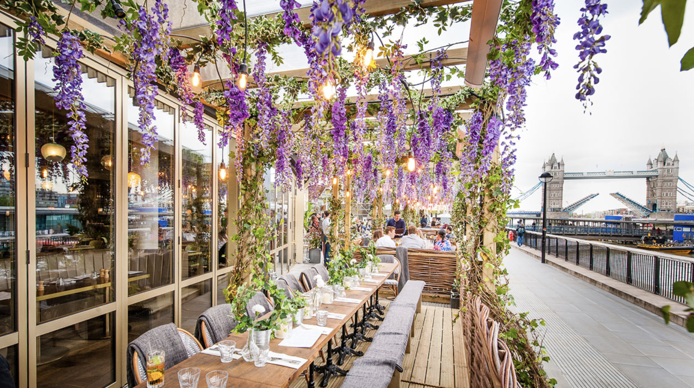

Our Story
Since opening its doors in 2015, La Maison de Fleur has been a celebration of the art of French cuisine. Nestled in the heart of the city, our restaurant is inspired by the timeless elegance of France and its culinary traditions. Every dish we serve is a tribute to the sophistication and warmth of French culture, blending classic techniques with a modern flair.
Our journey began with a passion for bringing people together over exquisite meals. From our carefully curated seasonal menus to our signature tasting experiences, we aim to create moments that linger in memory. Each ingredient is thoughtfully sourced, ensuring the finest quality and the freshest flavors in every bite.
At La Maison de Fleur, the ambiance is as important as the food itself. Guests are welcomed into an intimate, inviting space that echoes the charm of a Parisian bistro, with soft lighting, elegant décor, and the delicate aroma of freshly baked bread. Whether you're celebrating a special occasion or simply indulging in an evening of fine dining, we strive to make every visit unforgettable.
Our mission remains the same: to honor the rich heritage of French cuisine while embracing innovation and creativity. We invite you to join us on this journey, where every meal is a celebration of taste, tradition, and togetherness.

 
